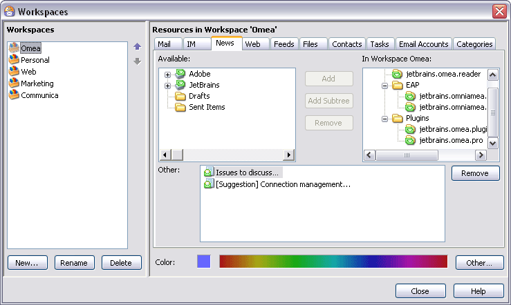
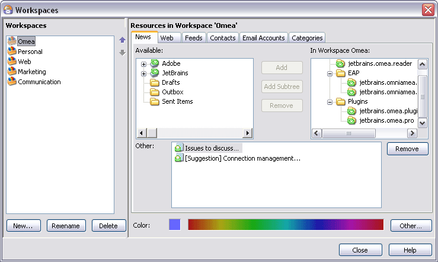

Workspaces Dialog
This dialog enables you to define new Workspaces, modify the already existing Workspaces, and specify what resources appear when you work in each workspace.

The Workspaces dialog

The Workspaces dialog
Workspaces Pane
This pane at the left side of the dialog shows a list of your current Workspaces. It has controls creating a new Workspace, and renaming or deleting an existing Workspace and change the order of the already existing Workspaces.
The list is empty until you create a new Workspace. The name of the currently selected Workspace appears highlighted.
You can resize the pane horizontally using the splitter.
To change the order of the existing Workspaces, select the desired Workspace and click either or to move the Workspace up or down (respectively) in the list of Workspaces. As you do it, the order of the Workspaces in the Workspaces bar also changes.
Context Menu
The Workspaces list has a context menu when a Workspace name is selected. The menu enables you to rename the selected Workspace or delete it.
You can also rename a Workspace "in place" by clicking on then name after it is selected and editing the name in the editable text box that appears.
New Button
Creates a new Workspace. You are prompted to enter a name for the new Workspace.
Rename Button
This button enables you to rename the Workspace currently selected in the Workspaces list. The button is disabled if no Workspace is selected, or if the Workspaces list is empty. The context menu on the Workspaces list provides the same functionality.
Delete Button
This button deletes the Workspace currently selected in the Workspaces list. The button is disabled if no Workspace is selected, or if the Workspaces list is empty. The context menu on the Workspaces list provides the same functionality.
You can change the order of workspaces in the Worskpaces Bar using Up and Down arrows. Location changes will be immediately reflected on the Workspace Bar.
Workspace Resources Pane
The right-hand pane of the dialog contains a set of tabbed pages corresponding to different kinds of resources. In each of these tabs you can specify which resources you want to see in the currently selected Workspace. You can pick from among all the indexed resources currently available to Omea Reader Omea Pro by default and by your settings in the Options dialog.
Each of the tabs has the same basic contents:
- A list showing all available resources of the type corresponding to the selected tab
- A list showing only the resources (of the type corresponding to the selected tab) that appear in the current Workspace
- A set of button controls for adding and removing resources from the list of resource for the current Workspace.
- A list of individual resources (e-mail messages or feed postings, for example) that have been added to the Workspace.
Available (list)
Shows all the resources currently available for inclusion in the currently selected Workspace. The list contents varies according to the tab selected:
| Selected Tab | List Content |
|---|---|
| Outlook folders | |
| IM | Instant Message Conversations |
| News | News servers and newsgroups |
| Web | Browser bookmark folders and bookmarks |
| Feeds | RSS and ATOM feeds, including any feed folders |
| Files | Windows folders |
| Contacts | Contacts from Outlook and instant message programs |
| Tasks | Currently defined tasks, if any |
| Email Accounts | E-mail account(s) belonging to you |
| Categories | Currently defined Categories |
In Workspace [name] (list)
Shows all the resources currently included in the currently selected Workspace. The list contents varies according to the tab selected:
| Selected Tab | List Content |
|---|---|
| Outlook folders | |
| IM | Instant Message Conversations |
| News | News servers and newsgroups |
| Web | Browser bookmark folders and bookmarks |
| Feeds | RSS and ATOM feeds, including any feed folders |
| Files | Windows folders |
| Contacts | Contacts from Outlook and instant message programs |
| Tasks | Currently defined tasks, if any |
| Email Accounts | E-mail account(s) belonging to you |
| Categories | Currently defined Categories |
Add Button
Available for all resource types, the button adds selected resource(s) in the Available list to the In Workspace list. The button is disable if there are no available resources to add to the Workspace.
For resources such as E-mail and Files that can contain sub-folders, this button adds only the selected folder... no sub-folders are added even if they exist.
Add Subtree Button
Similar to the Add button, except that for resources such as E-mail and Files than can contain sub-folders, this button adds both the selected folder and any sub-folders it may contain, down to the lowest level.
Available (visible) in all resource tabs except:
- Contacts
- Tasks
- E-mail Account
Remove Button
Removes selected resource(s) from the In Workspace list, thus removing then from the currently selected Workspace. No resources are deleted from disk, and all such removed resources still exist in Omea ReaderOmea Pro in the default "All" Workspace.
Other
This view presents a list of individual resources (e-mail messages or feed postings, for example) that have been added to the Workspace via the main window... by dragging and dropping onto the Workspace's selector button, for example.
Other shows items that have been added to the Workspace in the main window. Here, it shows some files that were added.
When you first create a new Workspace, it's normal for this view to be empty. Later, if you make changes to a Workspace and some items are listed here, you can use the Remove button to remove them from the Workspace.
Color Area
Allows you to select the Workspace color and preview it. As you click different places of the color selector, you can preview the resulting color in a small square at the left from the color selector.
To select a different color than the one available of the color selector area, click Other…. In the Color window which opens, select the desired color in the Basic colors list or define a Custom color. After you have selected or defined the desired color, click OK to close the Color window and return to Workspace editing. The color you select appears in the color preview square.
Remove button (Other)
Removes the selected resource item(s) from the Other list and the currently selected Workspace. No resources are deleted from disk, and all such removed resources still exist in Omea ReaderOmea Pro in the default "All" Workspace.
See also: